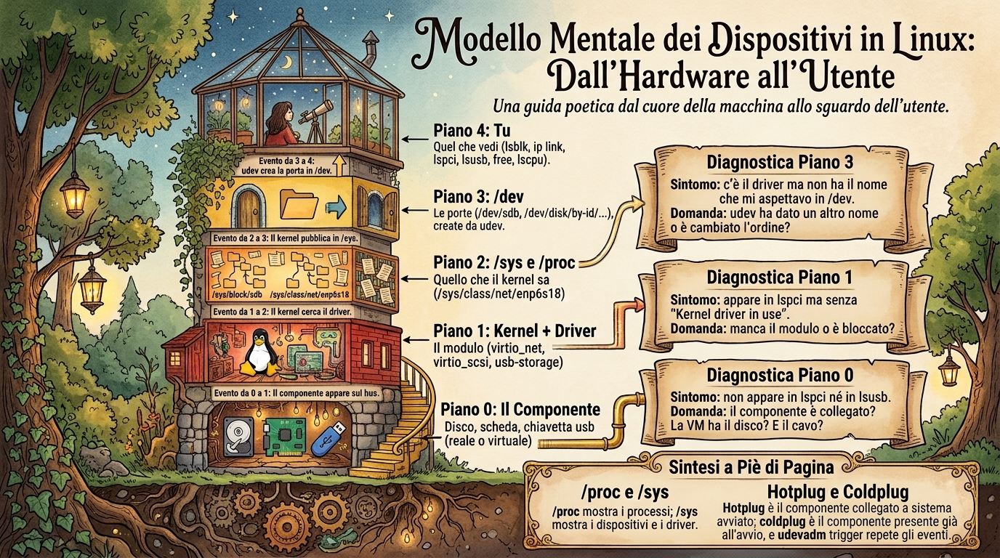
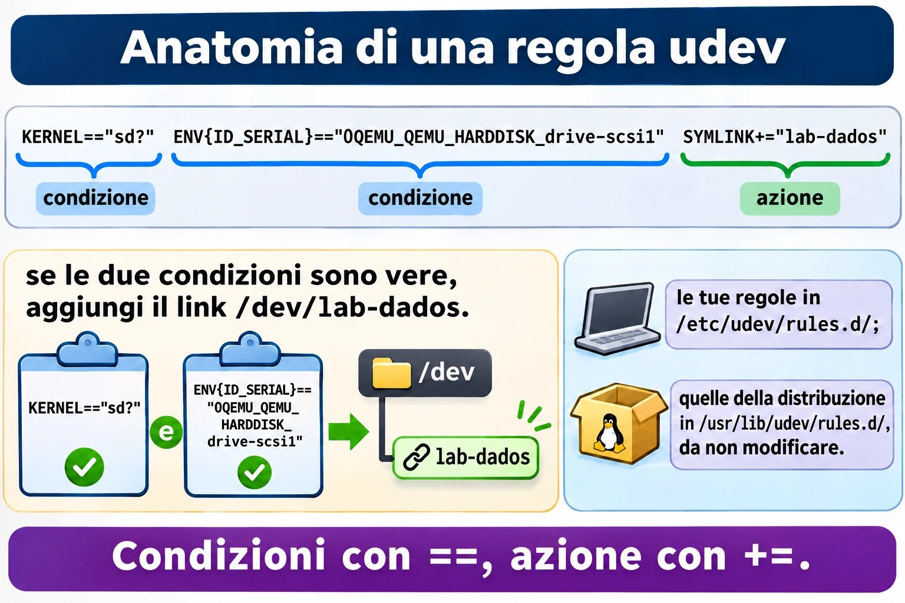
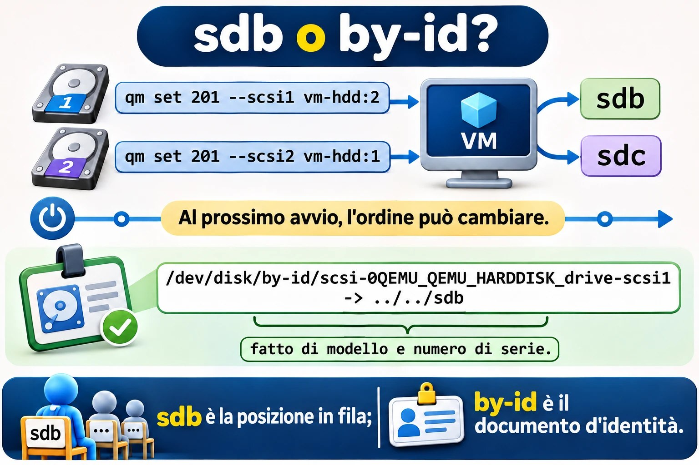
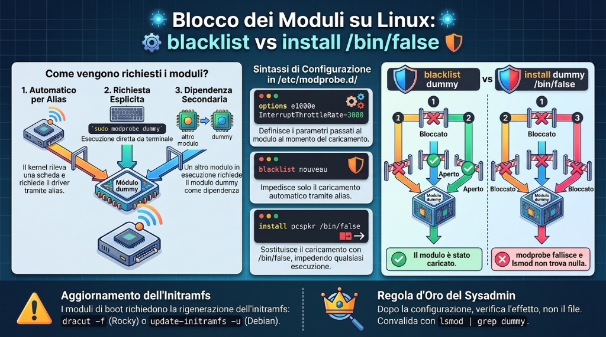

Lezione 2.2 · Hardware e dispositivi
Seconda lezione del Modulo 2. Il cliente telefona: "abbiamo messo un disco nuovo nel server e non compare", oppure "quale di queste due schede di rete è quella di internet?", oppure ancora "il server è lento, manca memoria?". In tutti e tre i casi, la prima cosa da fare non è configurare niente, ma chiedere al kernel cosa sta vedendo. Oggi impari a fare questo inventario in due minuti, capisci come un pezzo fisico diventa un file in /dev, colleghi un disco con la VM accesa e guardi il kernel riceverlo dal vivo. Alla fine dai al disco un nome che non cambia e blocchi un driver nel modo giusto, che non è il modo che quasi tutti usano.
| Scheda | Lezione 2.2 |
|---|---|
| Modulo | M2 · Sistema, utenti e permessi, lezione 2 di 8 |
| Quando | Settimana 4 |
| Alla fine sei in grado di | Fare l'inventario di CPU, memoria, dischi, schede e USB di qualsiasi server; dire quale driver gestisce ogni scheda; seguire dal vivo l'arrivo di un dispositivo; spiegare il percorso pezzo → kernel → /sys → udev → /dev; scegliere un nome di disco che non cambia tra un boot e l'altro; scrivere una regola udev; caricare, rimuovere e bloccare davvero un modulo del kernel |
| Prerequisiti | Lezione 2.1 (VM × container, systemd-detect-virt); Lezioni 1.5 e 1.6 (grep e pipe) |
| Durata | Circa 2h |
| Snapshot | m2a2-inicio e m2a2-fim su entrambe le VM |
1 · Riscaldamento
Tre domande, a memoria. Scrivi le risposte; le Soluzioni le verificano in fondo.
- Nella Lezione 0.1, la scheda di rete delle VM si chiamava
enp6s18. Secondo te, perché un nome così strano, e noneth0, come nei vecchi tutorial? - In Linux "tutto è un file". Secondo te: se il disco è un file, in quale cartella si trova, e come si chiama?
- In Windows, dove guardi quale driver sta usando una scheda? Secondo te: qual è l'equivalente in Linux, un programma o una cartella?
2 · Perché conta
L'inventario è il lavoro più sottovalutato del sysadmin. In un intervento, le prime domande sono sempre le stesse: quanti processori, quanta memoria resta, che dischi ci sono e se sono SSD, quale scheda di rete è collegata allo switch. Chi risponde in due minuti, via SSH, risolve prima che qualcuno debba andare al datacenter.
E c'è l'errore che butta giù i server: il disco che cambia nome. Oggi il disco di backup è /dev/sdb. Qualcuno inserisce una chiavetta, o cambia una controller, o il kernel semplicemente trova i dischi in un altro ordine al boot, e il disco di backup diventa /dev/sdc. Lo script di backup, che scriveva su /dev/sdb, ora scrive su un altro disco. Oppure /etc/fstab non trova il disco e il server si ferma al boot chiedendo la password di root sulla console. Nomi come sdb sono posizioni in una coda, non identità. L'identità è il numero di serie, e oggi impari a usarla.
Infine, i driver. Una scheda che "non funziona" è quasi sempre un modulo che non si è caricato, o che qualcuno ha bloccato. Saper caricare, rimuovere e bloccare un modulo è ciò che separa "reinstallo tutto" da "risolto in cinque minuti".
3 · Modello mentale
Un pezzo esiste per te solo dopo aver attraversato quattro piani. Quando qualcosa "non compare", sali i piani, uno per uno, finché trovi dove si è fermato.
4. você lsblk, ip link, lspci, lsusb, free, lscpu "o que eu vejo"
▲
3. /dev /dev/sdb, /dev/disk/by-id/... as portas, criadas pelo udev
▲
2. /sys e /proc /sys/block/sdb, /sys/class/net/enp6s18 o que o kernel sabe, em arquivos
▲
1. kernel+driver o módulo (virtio_net, virtio_scsi, usb-storage) quem fala com a peça
▲
0. a peça disco, placa, pendrive (real ou virtual)Leggi dal basso verso l'alto. Il pezzo compare sul bus (PCI, USB, SCSI). Il kernel cerca un driver che sappia parlarci; in Linux, quasi ogni driver è un modulo, un pezzo di kernel che si carica e si scarica a sistema acceso. Il kernel pubblica ciò che ha trovato in /sys, una cartella di file che non esistono su disco. udev, un servizio di systemd, riceve l'avviso "è arrivato un pezzo", ne legge i dati e crea la porta in /dev, insieme a nomi extra e stabili. Solo allora i programmi la vedono.
I tre controlli che risolvono il 90% dei casi:
| Sintomo | Piano | Domanda |
|---|---|---|
Non compare in lspci né in lsusb | 0 | Il pezzo è collegato? La VM ha il disco? Il cavo? |
Compare in lspci, ma senza Kernel driver in use | 1 | Manca il modulo, oppure è bloccato |
Ha il driver, ma non ha il nome che mi aspettavo in /dev | 3 | udev ha dato un altro nome, o l'ordine è cambiato |


4 · Concetto a strati
Essenziale
I pezzi. Quello che il lavoro quotidiano si aspetta che tu riconosca:
| Pezzo | Cosa fa | Come lo mostra Linux |
|---|---|---|
| Processore (CPU) | Esegue i programmi; ha core (cores) e, a volte, due thread per core (threads) | lscpu, nproc, /proc/cpuinfo |
| Memoria (RAM) | Conserva ciò che è in uso; si perde allo spegnimento | free -h, /proc/meminfo |
| Swap | Un'area del disco usata come memoria di riserva, molto più lenta | swapon --show, free -h |
| Disco HDD | Disco che ruota; economico, grande e lento | lsblk, colonna ROTA = 1 |
| Disco SSD e NVMe | Senza parti in movimento; l'NVMe va direttamente sul bus PCIe ed è il più veloce | ROTA = 0; l'NVMe si chiama nvme0n1 |
| Scheda di rete | Collega il server allo switch | ip -br link, lspci |
| Periferiche USB | Chiavetta, tastiera, token, UPS | lsusb |
| Firmware (BIOS o UEFI) | Il programma della scheda madre che accende tutto e chiama il bootloader del sistema | ls /sys/firmware/efi esiste solo in UEFI (Modulo 4) |
I nomi dei dischi. Il nome dice come il disco è collegato, non cosa è:
| Nome | Cos'è |
|---|---|
/dev/sda, /dev/sdb... | Dischi SATA, SAS, USB e SCSI, compreso lo SCSI virtuale di Proxmox |
/dev/sda1, /dev/sda2 | Le partizioni di sda |
/dev/nvme0n1, /dev/nvme0n1p1 | Il primo disco NVMe e la sua prima partizione (nota la p) |
/dev/vda, /dev/vdb | Disco virtio-blk in una VM |
/dev/mmcblk0 | Schede SD e memorie eMMC, come in un Raspberry Pi |
/dev/sr0 | Il lettore CD/DVD, compreso quello virtuale |
La lettera (a, b, c) viene assegnata nell'ordine in cui il kernel trova i dischi. Non è fissa.
L'inventario in sei comandi. Impara a memoria questa sequenza; apre ogni intervento:
lscpu | head -20 # processore: modello, core, virtualizzazione
free -h # memoria: guarda la colonna "available"
lsblk # dischi, partizioni e dove sono montati
lspci # schede sul bus PCI
lsusb # cosa c'è sull'USB
ip -br link # schede di rete e se il cavo è "UP"Intermedio
/proc e /sys, le due finestre del kernel. Nessuno dei due esiste su disco; il kernel inventa il contenuto nel momento in cui lo leggi.
/proc | /sys | |
|---|---|---|
| Nato per | Mostrare i processi (/proc/1234) | Mostrare i dispositivi e i driver |
| Organizzazione | Vecchia e mescolata: processi, memoria, CPU, configurazioni | Un albero: bus → dispositivo → driver |
| Esempi | /proc/cpuinfo, /proc/meminfo, /proc/partitions, /proc/modules | /sys/block/sda/size, /sys/class/net/enp6s18/address, /sys/module/ |
| Chi lo usa | Tu, free, top, ps | udev, lsblk, ip |
I moduli del kernel. Il driver di una scheda è quasi sempre un file .ko in /lib/modules/$(uname -r)/. I comandi:
| Comando | Cosa fa |
|---|---|
lsmod | Elenca i moduli caricati e chi dipende da chi (legge /proc/modules) |
modinfo nome | Mostra il file, la descrizione, i parametri e le dipendenze del modulo |
sudo modprobe nome | Carica il modulo e le sue dipendenze |
sudo modprobe -r nome | Rimuove il modulo, se nessuno lo sta usando |
lspci -k | Mostra, per ogni scheda, il driver in uso (Kernel driver in use) e quelli che andrebbero bene (Kernel modules) |
Esistono anche insmod e rmmod, che caricano e rimuovono un file, senza risolvere le dipendenze. Vale la pena riconoscerli; nel lavoro di tutti i giorni usa modprobe.
Configurare i moduli. File .conf in /etc/modprobe.d/. Tre righe che userai:
options e1000e InterruptThrottleRate=3000 # parâmetro passado ao carregar
blacklist nouveau # não carregar AUTOMATICAMENTE
install pcspkr /bin/false # nunca carregar, nem se alguém pedirLa differenza tra blacklist e install ... /bin/false è la trappola della lezione. Ci cascherai nel lab, di proposito.
udev. Quando arriva un pezzo, il kernel manda un evento (add); quando se ne va, un altro (remove). systemd-udevd riceve l'evento, raccoglie le informazioni sul pezzo (produttore, modello, numero di serie) e applica delle regole:
/usr/lib/udev/rules.d/: le regole della distribuzione. Non modificarle: il prossimo aggiornamento le sovrascrive./etc/udev/rules.d/: le tue. Un file con lo stesso nome di uno della distribuzione lo sostituisce.
Le regole creano i nomi stabili che devi usare in script e configurazioni:
| Cartella | Nome basato su | Cambia se... |
|---|---|---|
/dev/disk/by-id/ | Modello e numero di serie del disco | Sostituisci il disco |
/dev/disk/by-uuid/ | L'UUID del file system | Formatti di nuovo (Modulo 9) |
/dev/disk/by-path/ | Il percorso fisico: controller e porta | Sposti il cavo su un'altra porta |
/dev/disk/by-label/ | L'etichetta che hai dato formattando | Cambi l'etichetta |
Il nome della scheda di rete. enp6s18 è un nome prevedibile, dato da udev in base alla posizione fisica: en = Ethernet, p6 = bus PCI 6, s18 = slot 18. Il vecchio eth0 veniva assegnato nell'ordine di scoperta, come sdb, e con due schede l'eth0 di oggi poteva essere l'eth1 di domani. Su un server fisico vedrai anche eno1 (scheda onboard, numerata dal firmware) e ens1f0 (scheda in slot, porta 0).
Hotplug e coldplug. Un pezzo collegato a sistema acceso è hotplug: il kernel manda l'evento subito. Un pezzo che c'era già al boot è coldplug: udev, all'avvio, chiede al kernel di ripetere gli eventi di tutto ciò che esiste già (udevadm trigger), e tratta tutto allo stesso modo.
Ponte Windows
| In Windows | In Linux | Cosa cambia |
|---|---|---|
| Gestione dispositivi | lspci -k, lsusb, lsblk | Tre comandi invece di una finestra, e funzionano via SSH |
Driver .sys installato dal produttore | Modulo .ko, quasi sempre già nel kernel | In Linux raramente si installa un driver: arriva con il kernel |
| "Disabilita dispositivo" | install modulo /bin/false in /etc/modprobe.d/ | Blocca il driver, non il pezzo |
Lettera di unità D: | /dev/sdb e il punto di montaggio | La lettera di Windows è il luogo dove si monta; sdb è il pezzo |
| Disco > proprietà > numero di serie | /dev/disk/by-id/ e lsblk -o +SERIAL | |
| Gestione attività > Prestazioni | lscpu, free -h, top | |
msinfo32 | sudo dmidecode, hostnamectl | dmidecode legge le tabelle del firmware: produttore, modello, seriale del server |
Avanzato
lspci -k mostra due piani. In una VM, la scheda di rete compare come Virtio network device con Kernel driver in use: virtio-pci. Ma il modulo di rete è virtio_net. Non è una contraddizione: virtio-pci gestisce la conversazione con il bus PCI; sopra di esso, virtio_net gestisce la rete. Il link /sys/class/net/enp6s18/device/driver punta a quello di sopra.
udev e D-Bus. udev crea i file in /dev. I programmi che devono reagire a un pezzo nuovo, come l'ambiente grafico che apre una finestra quando colleghi una chiavetta, non leggono udev direttamente: ascoltano D-Bus, il bus di messaggi del sistema, dove servizi come udisks2 avvisano "è arrivato un disco". Su un server si usa poco; basta conoscere il ruolo di ciascuno.
Regole udev. Una regola è una riga di coppie chiave-operatore-valore. Le chiavi con == o != sono condizioni; le chiavi con =, += o := sono azioni:
KERNEL=="sd?", ENV{ID_SERIAL}=="0QEMU_QEMU_HARDDISK_drive-scsi1", SYMLINK+="lab-dados"
└─ condição ─┘ └──────────────── condição ─────────────────────┘ └──── ação ─────────┘Se tutte le condizioni sono vere, le azioni avvengono. udevadm info mostra le variabili che puoi usare, e udevadm monitor mostra gli eventi dal vivo.
dmesg e journalctl -k. I messaggi del kernel stanno in un buffer in memoria che dmesg legge; anche il journal li conserva, con la data, e journalctl -k mostra solo quelli. Su Debian, leggere il buffer richiede root (kernel.dmesg_restrict = 1). Usa sudo su entrambe le distribuzioni e non pensarci più.


== e un'azione con +=.5 · Rocky × Debian
| Cosa | Rocky 9 | Debian 13 |
|---|---|---|
lspci e lsusb | Pacchetti pciutils e usbutils; possono mancare nell'installazione minima | Gli stessi pacchetti; possono mancare nell'installazione minima |
dmesg senza sudo | Funziona | Bloccato (dmesg_restrict = 1) |
journalctl -k senza sudo | Solo per chi è nel gruppo wheel o systemd-journal | Solo per chi è nel gruppo adm o systemd-journal |
| Moduli | /lib/modules/$(uname -r)/ | /lib/modules/$(uname -r)/ |
| Regole udev della distribuzione | /usr/lib/udev/rules.d/ | /usr/lib/udev/rules.d/ |
| Validare una regola udev | udevadm test (il systemd di Rocky 9 non ha ancora verify) | udevadm verify arquivo.rules |
| Primo disco delle VM del lab | sda, oppure vda se la VM usa virtio-blk | sda, oppure vda se la VM usa virtio-blk |
6 · Lab guidato
Il percorso: fai l'inventario delle due VM come faresti presso un nuovo cliente, scopri quale driver gestisce ogni scheda, colleghi un disco con la VM accesa e guardi il suo arrivo, dai al disco un nome che non cambia e finisci mettendo le mani sui moduli del kernel. Il disco che creerai resta sulle VM: è il materiale del Modulo 9.
Passo 1 · Snapshot e strumenti
Sul nodo Proxmox:
qm snapshot 201 m2a2-inicio
qm snapshot 202 m2a2-inicioSulle VM, assicurati di avere lspci e lsusb:
sudo dnf install -y pciutils usbutils # rocky-lab
sudo apt install -y pciutils usbutils # debian-labPasso 2 · L'inventario in due minuti
Su rocky-lab:
lscpu | grep -E '^(Model name|CPU\(s\)|Thread|Core|Socket|Hypervisor|Virtualization)'
nproc
free -h
sudo swapon --show
lsblk -o NAME,SIZE,TYPE,ROTA,MOUNTPOINTSCosa leggere in ciascuno:
- In
lscpu, la rigaHypervisor vendor: KVMconferma ciò che hai visto nella Lezione 2.1.CPU(s)è il numero di processori che la VM ha ricevuto, ed è lo stesso dinproc. - In
free -h, guarda la colonnaavailable, nonfree. Linux usa la memoria che avanza come cache del disco; la colonnafreesembra bassa, ed è un bene.availableè ciò che i programmi possono ancora usare. - In
lsblk, Rocky mostra il disco, le partizioni e i volumi LVM (rl-root,rl-swap) creati dall'installer. La colonnaROTAdice1per un disco che ruota. In una VM, Proxmox di solito dice1anche con un SSD sotto, a meno che l'opzionessd=1sia attiva sul disco. Il sistema sa solo ciò che l'hardware gli racconta.
Ora le schede:
lspci
lsusb
ip -br linklspci elenca le schede virtuali di QEMU: la controller SCSI e la scheda di rete, entrambe Virtio, più i bridge PCI. lsusb mostra i bus USB e, probabilmente, un QEMU USB Tablet: il mouse della console di Proxmox. ip -br link mostra lo ed enp6s18, con UP.
Fai lo stesso su debian-lab. Annota le differenze: la dimensione della memoria, il layout del disco (Debian di solito usa partizioni semplici, senza LVM) e nient'altro. I pezzi sono gli stessi.
Passo 3 · Chi guida ogni scheda
Su rocky-lab:
lspci -k | grep -A3 -i -E 'ethernet|scsi'
readlink /sys/class/net/enp6s18/device/driver
lsmod | grep -E '^virtio|^Module'
sudo modinfo virtio_net | grep -E '^(filename|description|depends)'lspci -k mostra Kernel driver in use: virtio-pci su entrambe le schede. readlink risponde con un percorso che termina in virtio_net. Hanno ragione entrambi: virtio-pci parla con il bus, e virtio_net fa la rete sopra di esso (sezione 4, Avanzato). lsmod mostra i moduli caricati e, nella colonna Used by, chi dipende da ciascuno. modinfo mostra dove si trova il file .ko.
Ora sali i piani del modello mentale per la scheda di rete, dal basso verso l'alto:
lspci | grep -i ethernet # piano 0: il pezzo esiste
ls /sys/class/net/enp6s18/ # piano 2: il kernel ha pubblicato
cat /sys/class/net/enp6s18/address # il MAC, letto direttamente dal kernel
cat /sys/class/net/enp6s18/operstate # up o down
ip -br link show enp6s18 # piano 4: ciò che vediip non inventa niente: legge ciò che c'è in /sys. Per questo, quando un comando "mente", il primo posto dove controlli è /sys.
Passo 4 · Un disco nuovo, con la VM accesa
Prepara due finestre SSH su rocky-lab. Nella prima, fotografa i dischi e lascia il monitor di udev in ascolto:
lsblk -d -o NAME,SIZE,SERIAL > ~/discos-antes.txt
cat ~/discos-antes.txt
sudo udevadm monitor --kernel --udev --subsystem-match=blockNella seconda, lascia parlare il kernel:
sudo journalctl -k -fOra, sul nodo Proxmox, crea un disco da 2 GB e collegalo alla VM. vm-hdd è lo storage Ceph della lezione 0.1; se il tuo ha un altro nome, pvesm status te lo mostra:
qm set 201 --scsi1 vm-hdd:2,discard=on,iothread=1,ssd=1Guarda le due finestre. In journalctl, il kernel annuncia il disco: sd ... [sdb] ... (2.15 GB/2.00 GiB), e la riga Attached SCSI disk. Nel monitor arrivano coppie di righe: KERNEL[...] add (il kernel ha avvisato) e subito dopo UDEV [...] add (udev ha finito di creare le porte). È il modello mentale in azione, piano per piano, in meno di un secondo.
Ferma il monitor e journalctl con Ctrl+C e confronta:
lsblk -d -o NAME,SIZE,SERIAL > ~/discos-depois.txt
diff ~/discos-antes.txt ~/discos-depois.txtdiff mostra la riga nuova. Nota il nome: probabilmente sdb, ma può essere un altro, a seconda di come è collegato il disco principale. Se il disco di sistema è vda (virtio-blk), quello nuovo, entrato nella controller SCSI, diventa sda. Questo è il punto: il nome non l'hai scelto tu, e non devi contarci.
Fai lo stesso su debian-lab, con qm set 202 --scsi1 vm-hdd:2,discard=on,iothread=1,ssd=1.
Passo 5 · Il nome che non cambia
Su rocky-lab:
ls -l /dev/disk/by-id/ | grep -v -- '-part'
udevadm info --query=property --name=/dev/sdb | grep -E '^(ID_SERIAL|ID_MODEL|ID_PATH|DEVLINKS)='(Se il tuo disco nuovo non è sdb, cambia il nome qui e nei prossimi passi.)
ls -l mostra link come scsi-0QEMU_QEMU_HARDDISK_drive-scsi1 -> ../../sdb. Il nome del link viene dal modello e dal numero di serie; la destinazione, sdb, è solo la posizione attuale. udevadm info mostra da dove udev ha preso questo dato: la variabile ID_SERIAL, con il valore 0QEMU_QEMU_HARDDISK_drive-scsi1. Su un server fisico, al suo posto compaiono il modello e il numero di serie stampati sull'etichetta del disco.
Per vedere perché è importante, collega un secondo disco, da 1 GB, e guarda la coda avanzare:
qm set 201 --scsi2 vm-hdd:1 # sul nodo Proxmoxlsblk -d -o NAME,SIZE,SERIAL # su rocky-labOra c'è un sdc da 1 GB. In questo boot, l'ordine è quello di arrivo. Al prossimo boot, il kernel trova i dischi tutti insieme, e l'ordine può cambiare. Il by-id di ciascuno non cambia mai.
Decidi 1 · Il disco del backup. Il cliente userà il disco da 2 GB come destinazione del backup notturno. Lo script ha bisogno di un percorso per il disco. Quale scrivi?
- A)
/dev/sdb, perché è il nome che il disco ha adesso ed è scritto inlsblk. - B)
/dev/disk/by-id/scsi-0QEMU_QEMU_HARDDISK_drive-scsi1. - C)
/dev/disk/by-path/..., il percorso della porta della controller. - D) Fa lo stesso: Linux dà sempre i nomi nello stesso ordine, purché nessuno tocchi l'hardware.
Scegli un'opzione prima di continuare.
| Se hai scelto | Risultato | Perché |
|---|---|---|
| A | ❌ Sbagliato | Funziona fino al primo boot in cui l'ordine cambia, o finché qualcuno inserisce una chiavetta. Allora il backup scrive sul disco sbagliato, e nessuno se ne accorge finché non gli serve. |
| B | ✅ Giusto | Il nome deriva dal numero di serie. Il disco può cambiare porta, controller e lettera: il link continua a puntare a lui. |
| C | ❌ Sbagliato | Non cambia con l'ordine del boot, ma cambia se qualcuno sposta il cavo su un'altra porta o cambia la controller. È utile quando vuoi "il disco che sta nella baia 3", non "questo disco". |
| D | ❌ Sbagliato | I dischi vengono trovati in parallelo, e il primo a rispondere si prende la lettera. In un server con più dischi, l'ordine cambia da un boot all'altro senza che nessuno tocchi niente. |
Da ricordare: sdb è la posizione nella coda; by-id è il documento d'identità. In script e configurazioni, usa il documento.
Quando il disco avrà un file system, nel Modulo 9, il nome preferito per /etc/fstab sarà l'UUID. Oggi il disco è vuoto e non ha UUID: ls /dev/disk/by-uuid/ non mostra niente di lui.
Prima di continuare, scollega il disco da 1 GB, che serviva solo per la dimostrazione. Sul nodo Proxmox:
qm set 201 --delete scsi2Esce dalla VM e diventa un disco "non usato" (unused0) nella configurazione. Cancellalo dall'interfaccia di Proxmox, in Hardware, selezionando Unused Disk 0 e cliccando su Remove. Quello da 2 GB resta.


sdb è la posizione nella coda; il link in by-id segue il disco.Passo 6 · Una regola udev: il disco con il tuo nome
Farai creare a udev /dev/lab-dados, che punta al disco da 2 GB, ovunque si trovi. Su rocky-lab, conferma il valore di ID_SERIAL del tuo disco:
udevadm info --query=property --name=/dev/sdb | grep '^ID_SERIAL='Scrivi la regola, con il tuo valore al posto dell'esempio:
sudo tee /etc/udev/rules.d/99-lab.rules <<'EOF'
# disco dati del lab, tramite numero di serie
KERNEL=="sd?", ENV{ID_SERIAL}=="0QEMU_QEMU_HARDDISK_drive-scsi1", SYMLINK+="lab-dados"
EOF
sudo udevadm control --reload
sudo udevadm trigger /dev/sdb
ls -l /dev/lab-dadosls -l mostra /dev/lab-dados -> sdb. control --reload fa rileggere le regole a udev; trigger ripete l'evento del disco, come se fosse appena arrivato. A un boot, niente di tutto questo serve: le regole valgono per ogni evento.
Leggi la regola ad alta voce: "se il kernel ha chiamato il dispositivo sd più una lettera, e il numero di serie è questo, allora aggiungi il link lab-dados". Due condizioni con ==, un'azione con +=. Il += aggiunge alla lista dei link; con =, cancelleresti i link che le regole della distribuzione avevano già creato, come quelli di by-id.
Fai lo stesso su debian-lab. Lì, valida la regola con il verificatore:
sudo udevadm verify /etc/udev/rules.d/99-lab.rulesPasso 7 · Moduli: caricare, rimuovere, leggere
Userai il modulo dummy, che crea una scheda di rete finta. Non tocca niente di reale, ed è sicuro caricarlo e rimuoverlo. Su rocky-lab:
lsmod | grep dummy; echo "rc=$?"
sudo modprobe dummy
lsmod | grep dummy
ip -br link show dummy0
sudo modinfo dummy | grep -E '^(filename|description|parm)'
sudo modprobe -r dummy
ip -br link show dummy0; echo "rc=$?"Il primo grep non trova niente (rc=1). Dopo modprobe, il modulo compare in lsmod e una scheda dummy0 compare in ip. modinfo mostra che accetta il parametro numdummies, che dice quante schede creare. modprobe -r rimuove il modulo, e la scheda scompare (Device "dummy0" does not exist).
Ora con un parametro, nel modo in cui si configura un driver vero:
echo 'options dummy numdummies=3' | sudo tee /etc/modprobe.d/lab-dummy.conf
sudo modprobe dummy
ip -br link | grep dummy
sudo modprobe -r dummyTre schede: dummy0, dummy1, dummy2. modprobe ha letto il file di /etc/modprobe.d/ e ha passato il parametro da solo. È così che si regola il driver di una scheda di rete o di una controller: un options in un file, e la regolazione vale a ogni boot.
Ripeti su debian-lab, se vuoi vedere che è identico. Lascia lab-dummy.conf su entrambe: il Guasto B parte da lì.
7 · Rompi e ripara
Guasto A · La regola che udev ha ignorato
Un collega ha "sistemato" la tua regola. Fai quello che ha fatto lui, su rocky-lab:
sudo sed -i 's/KERNEL=="sd?"/KERNEL="sd?"/' /etc/udev/rules.d/99-lab.rules
cat /etc/udev/rules.d/99-lab.rules
sudo udevadm control --reload
sudo udevadm trigger /dev/sdbOsserva.
ls -l /dev/lab-dadosNo such file or directory. Il link è sparito. Nessun comando ha dato errore: reload e trigger sono tornati in silenzio.
Diagnosi. udev non si lamenta nel terminale; si lamenta nel suo log:
sudo journalctl -u systemd-udevd --since '-5min' | tail -5Il messaggio indica il file e la riga, 99-lab.rules:2, e parla di operatore non valido per KERNEL. Il collega ha sostituito == con =. In udev, KERNEL può essere solo una condizione: il nome lo dà il kernel, e udev non può cambiarlo. Una condizione scritta con l'operatore di azione non ha senso, e udev scarta l'intera riga. Al trigger successivo, poiché nessuna regola chiede più lab-dados, cancella il link.
Su debian-lab, il verificatore lo scopre prima, senza bisogno del log: sudo udevadm verify /etc/udev/rules.d/99-lab.rules risponde con la riga e il motivo.
Decidi A · La riparazione. Cosa risolve?
- A) Rimettere
KERNEL=comeKERNEL==e ripeterereloadetrigger. - B) Riavviare la VM: al boot, udev legge le regole da zero.
- C) Rinominare il file in
10-lab.rules, perché giri prima delle regole della distribuzione. - D) Sostituire
SYMLINK+=conSYMLINK=, per forzare la creazione del link.
Scegli un'opzione prima di continuare.
| Se hai scelto | Risultato | Perché |
|---|---|---|
| A | ✅ Giusto | Con ==, la riga torna ad avere due condizioni e un'azione, e udev la accetta. |
| B | ❌ Sbagliato | Al boot, legge lo stesso file con lo stesso errore e scarta la stessa riga. Riavviare non corregge il testo. |
| C | ❌ Sbagliato | Con il nome 10-, la regola gira prima di quelle della distribuzione, e ID_SERIAL non esiste ancora: sono loro a crearlo. La regola non scatterebbe mai. Il 99- esiste per questo. |
| D | ❌ Sbagliato | Il problema è nella condizione, non nell'azione. E SYMLINK= cancellerebbe i link della distribuzione, come quelli di by-id. |
Da ricordare: == chiede, = comanda. Una regola udev che "non fa niente" ha la risposta in journalctl -u systemd-udevd.
Ripara.
sudo sed -i 's/KERNEL="sd?"/KERNEL=="sd?"/' /etc/udev/rules.d/99-lab.rules
sudo udevadm control --reload
sudo udevadm trigger /dev/sdb
ls -l /dev/lab-dadosIl link torna. Se vuoi vedere la regola valutata, riga per riga, senza cambiare niente: sudo udevadm test /sys/class/block/sdb 2>&1 | grep -i lab.
Guasto B · Il modulo che non ha obbedito
Il cliente vuole che il modulo dummy non venga mai caricato sul server. Fai quello che si legge su ogni forum, su rocky-lab:
echo 'blacklist dummy' | sudo tee /etc/modprobe.d/lab-bloqueio.conf
sudo modprobe dummyOsserva.
lsmod | grep dummy
ip -br link | grep dummyIl modulo si è caricato. Le tre schede dummy ci sono, compreso il parametro di lab-dummy.conf. Il blacklist non ha fatto niente.
Diagnosi. Leggi cosa dice lo stesso modprobe a riguardo:
man modprobe.d | grep -A6 -i '^ *blacklist'Il blacklist dice: non usare gli alias (aliases) di questo modulo. Quando il kernel trova una scheda, non chiede "carica e1000e"; chiede "carica il driver per la scheda con codice pci:v00008086d000015BC...", e modprobe cerca quale modulo ha quell'alias. Il blacklist taglia solo quella strada, quella automatica. Un modprobe dummy per nome è una richiesta esplicita, e modprobe obbedisce. Anche un altro modulo che dipende da quello bloccato lo tira dentro.
Decidi B · La riparazione. Il cliente vuole che il modulo non si carichi in nessun modo. Cosa risolve?
- A) Sostituire la riga con
install dummy /bin/false. - B) Cancellare il file
dummy.koda/lib/modules/. - C) Mettere la riga
blacklist dummyanche in/etc/modules-load.d/. - D) Eseguire
sudo modprobe -r dummyogni volta che qualcuno lo carica.
Scegli un'opzione prima di continuare.
| Se hai scelto | Risultato | Perché |
|---|---|---|
| A | ✅ Giusto | install sostituisce il caricamento con un comando. Con /bin/false, qualsiasi richiesta, automatica, esplicita o per dipendenza, esegue false e fallisce. |
| B | ❌ Sbagliato | Funziona fino al prossimo aggiornamento del kernel, che riporta il file in una cartella nuova. E hai toccato un file che appartiene a un pacchetto. |
| C | ❌ Sbagliato | Quella cartella dice quali moduli caricare al boot, non quali bloccare. La sintassi è un'altra: una lista di nomi. |
| D | ❌ Sbagliato | Non è un blocco, è una pulizia. Tra il caricamento e la rimozione, il modulo è stato nel kernel. |
Da ricordare: blacklist blocca l'automatico; install modulo /bin/false blocca tutto. In pratica, i due insieme, nello stesso file.
Ripara.
sudo modprobe -r dummy
printf 'blacklist dummy\ninstall dummy /bin/false\n' | sudo tee /etc/modprobe.d/lab-bloqueio.conf
sudo modprobe dummy; echo "rc=$?"
lsmod | grep dummy; echo "rc=$?"modprobe fallisce, con un messaggio sul comando di installazione /bin/false, e lsmod non trova niente. Il blocco è vero.
Ora annulla il blocco, perché il lab non ne ha bisogno, e verifica:
sudo rm /etc/modprobe.d/lab-bloqueio.conf
sudo modprobe dummy && lsmod | grep dummy
sudo modprobe -r dummyUn dettaglio che frega molti: se il modulo bloccato è di qualcosa che parte al boot, come il driver video, può trovarsi anche dentro l'initramfs, l'immagine che il kernel carica prima del disco. Allora bisogna rigenerare l'initramfs (dracut -f su Rocky, update-initramfs -u su Debian) perché il blocco valga fin dal primo secondo. Questo è argomento del Modulo 4.


La lezione
I due guasti di oggi hanno la stessa forma: un comando che torna senza errore e non fa ciò che pensavi. udev ha accettato il reload e ha scartato la regola in silenzio. Il blacklist è stato scritto e non ha bloccato niente. Con hardware e driver, quasi niente si lamenta nel terminale; il posto dei reclami è il log (journalctl -u systemd-udevd, journalctl -k), e la conferma è sempre vedere il risultato: il link esiste? il modulo è in lsmod? L'abitudine di questa lezione è la stessa della 0.2 e della 2.1, solo più esigente: dopo aver configurato, controlla l'effetto, non il file.
8 · Trappole
| Cosa digiti o vedi | Cosa succede | Come evitarla |
|---|---|---|
/dev/sdb in uno script o in fstab | Un giorno l'ordine cambia e lo script scrive sul disco sbagliato | /dev/disk/by-id/..., oppure l'UUID dopo aver formattato |
free mostra poca memoria libera | Panico inutile: è la cache del disco | Guardare la colonna available |
lspci dà command not found | Manca il pacchetto in un'installazione minima | pciutils; per lsusb, usbutils |
dmesg dà Operation not permitted su Debian | Lettura del buffer del kernel ristretta a root | sudo dmesg oppure sudo journalctl -k |
blacklist modulo per "spegnere" un driver | Si carica comunque se richiesto per nome o per dipendenza | Aggiungere install modulo /bin/false |
sudo modprobe -r virtio_net (o il driver della tua scheda) via SSH | La scheda sparisce e la tua sessione cade con lei | Mai rimuovere il driver della scheda da cui sei connesso; usare la console |
Modificare una regola in /usr/lib/udev/rules.d/ | Il prossimo aggiornamento cancella la tua modifica | Copiare in /etc/udev/rules.d/ con lo stesso nome e modificare lì |
KERNEL="sd?" in una regola udev | L'intera riga viene scartata, in silenzio | == nelle condizioni, = o += nelle azioni |
SYMLINK="nome" invece di SYMLINK+= | Cancella i link creati da altre regole | SYMLINK+= |
Regola udev con numero basso, come 10- | Gira prima delle regole che creano ID_SERIAL e non scatta mai | Regole proprie con 99- |
insmod arquivo.ko | Fallisce se il modulo dipende da un altro non ancora caricato | modprobe nome, che risolve le dipendenze |
ROTA 1 in una VM e la conclusione "il disco è lento" | La VM sa solo ciò che l'hypervisor le racconta | Chiedere all'hypervisor; su Proxmox, l'opzione ssd=1 del disco |
9 · Quiz
Dieci domande, senza consultare. Scrivi la lettera o la risposta di ciascuna e solo dopo apri le Soluzioni.
1. Quale comando mostra, per ogni scheda PCI, il driver del kernel in uso?
- A)
lsmod - B)
lspci -k - C)
lsusb -v - D)
modinfo
2. Hai scritto blacklist e1000e e il modulo continua a caricarsi quando un collega esegue modprobe e1000e. Perché, e cosa blocca davvero?
3. Dove mette l'amministratore le proprie regole udev?
- A)
/usr/lib/udev/rules.d/ - B)
/etc/udev/rules.d/ - C)
/dev/udev/ - D)
/sys/udev/rules/
4. In lsblk -o NAME,ROTA, un disco compare con ROTA uguale a 0. Cosa dice?
5. Come chiama Linux la prima partizione del primo disco NVMe?
- A)
/dev/nvme1 - B)
/dev/nvme0n1p1 - C)
/dev/sda1 - D)
/dev/nvme0p1
6. Perché la scheda di rete delle VM si chiama enp6s18 e non eth0? Cosa significa ogni pezzo del nome?
7. Quale comando carica un modulo risolvendone le dipendenze?
- A)
insmod - B)
modprobe - C)
lsmod - D)
depmod
8. Il cliente dice che il server "è senza memoria" perché free -h mostra free 180Mi su un totale di 8 GiB. Quale colonna guardi prima di essere d'accordo?
- A)
shared - B)
buff/cache - C)
available - D)
used
9. Stai per collegare una chiavetta al server e vuoi vedere, dal vivo, cosa dice il kernel quando arriva. Cita due comandi che lo mostrano.
10. Which pseudo-filesystem exposes the kernel's view of devices, buses and drivers as a directory tree, and is the main source of information for udev?
- A)
/proc - B)
/sys - C)
/dev - D)
/run/udev - E)
/etc/udev
10 · Flashcard e promemoria
Da sapere a memoria
- L'inventario:
lscpu,free -h,lsblk,lspci,lsusb,ip -br link. - I quattro piani: pezzo → kernel e driver →
/syse/proc→ udev crea/dev→ tu. lspci -kdice quale driver gestisce ogni scheda.sdbè una posizione nella coda;/dev/disk/by-id/è identità.- In udev,
==è condizione e+=è azione; le tue regole stanno in/etc/udev/rules.d/99-*.rules. blacklistblocca l'automatico;install modulo /bin/falseblocca tutto.
Da consultare
| Domanda | Comando o file |
|---|---|
| Quanti processori? È una VM? | lscpu; nproc |
| Manca memoria? | free -h, colonna available; swapon --show |
| Che dischi ci sono, SSD o HDD? | lsblk -o NAME,SIZE,TYPE,ROTA,MODEL,SERIAL,MOUNTPOINTS |
| Qual è il numero di serie del disco? | lsblk -d -o NAME,SERIAL; ls -l /dev/disk/by-id/ |
| Che schede ci sono e con quale driver? | lspci -k |
| Cosa c'è sull'USB? | lsusb; lsusb -t mostra l'albero |
| Quale driver gestisce la scheda di rete? | readlink /sys/class/net/enp6s18/device/driver |
| Cosa ha detto il kernel al boot? | sudo journalctl -k -b; sudo dmesg |
| Vedere arrivare un pezzo, dal vivo | sudo journalctl -k -f; sudo udevadm monitor |
| Le variabili udev di un disco | udevadm info --query=property --name=/dev/sdb |
| Applicare una nuova regola udev | sudo udevadm control --reload; sudo udevadm trigger /dev/sdb |
| Perché la regola non ha funzionato? | sudo journalctl -u systemd-udevd; udevadm verify (Debian) |
| Moduli caricati | lsmod |
| Su un modulo | modinfo nome |
| Caricare e rimuovere | sudo modprobe nome; sudo modprobe -r nome |
| Parametri e blocchi | File .conf in /etc/modprobe.d/ |
| Produttore, modello e seriale del server | sudo dmidecode -t system; hostnamectl |
Flashcard
| Fronte | Retro |
|---|---|
/proc × /sys | /proc: processi e informazioni generali del kernel. /sys: l'albero di dispositivi e driver |
Chi crea i file in /dev? | udev (systemd-udevd), a partire dagli eventi del kernel |
| A cosa serve D-Bus? | Bus di messaggi: avvisa i programmi, come l'ambiente grafico, che è successo qualcosa |
| Hotplug × coldplug | Hotplug: pezzo collegato a sistema acceso. Coldplug: c'era già al boot; udev ripete gli eventi |
modprobe × insmod | modprobe risolve le dipendenze e legge /etc/modprobe.d/; insmod carica solo un file |
enp6s18 | Ethernet, bus PCI 6, slot 18: nome prevedibile, dato dalla posizione |
nvme0n1p2 | Disco NVMe 0, namespace 1, partizione 2 |
vda | Disco virtio-blk in una VM |
ROTA | 1: disco che ruota. 0: SSD o NVMe |
options in /etc/modprobe.d/ | Passa parametri al modulo ogni volta che viene caricato |
11 · Checklist e chiusura
- [ ] Faccio l'inventario di CPU, memoria, dischi, schede e USB di un server in due minuti.
- [ ] Dico quale driver gestisce ogni scheda, con
lspci -ke con/sys. - [ ] Spiego i quattro piani e so in quale cercare quando qualcosa "non compare".
- [ ] Guardo l'arrivo di un disco con
journalctl -k -feudevadm monitor. - [ ] Scelgo
by-idinvece disdbe spiego perché. - [ ] Scrivo una regola udev che crea un link tramite il numero di serie, e faccio la diagnosi quando non funziona.
- [ ] Carico, rimuovo, configuro e blocco davvero un modulo.
Ultimo esercizio, senza guardare. Su debian-lab, senza aprire questa lezione, scrivi da zero due file:
/etc/udev/rules.d/99-lab.rules, che crea/dev/lab-dadosper il disco da 2 GB, tramite il numero di serie./etc/modprobe.d/lab-bloqueio.conf, che impedisce in ogni modo il caricamento didummy.
Poi dimostra entrambi: ls -l /dev/lab-dados mostra il link, e sudo modprobe dummy fallisce. Apri le Soluzioni solo dopo, oppure dopo tre tentativi. Alla fine, cancella lab-bloqueio.conf.
Snapshot di fine. Sul nodo Proxmox:
qm snapshot 201 m2a2-fim
qm snapshot 202 m2a2-fim12 · Nella vita reale
Missione della settimana, sola lettura. Scegli tre server reali: possibilmente uno fisico, una VM e uno che sia "con problemi" o "lento". Su ciascuno, senza cambiare niente:
lscpu | grep -E '^(Model name|CPU\(s\)|Hypervisor)'efree -h: quanto processore e quanta memoria, e quanto èavailable.lsblk -o NAME,SIZE,TYPE,ROTA,MODEL,MOUNTPOINTS: quanti dischi, di che tipo, e cosa è montato dove.lspci -k | grep -A3 -i ethernet(oppureip -br link, se non c'èlspci): quali schede di rete, con quale driver, e quali sonoUP.sudo journalctl -k -b -p warning | tail -20: gli avvisi del kernel dall'ultimo boot. Cerca parole comeI/O error,reset,link is down,temperature.grep -r -v '^#' /etc/modprobe.d/ 2>/dev/nullels /etc/udev/rules.d/: qualcuno ha già toccato driver o regole su questo server?- Su un fisico, se hai
sudo:sudo dmidecode -t system | grep -E 'Manufacturer|Product|Serial'. È il numero di serie che il supporto del produttore ti chiederà.
Per il diario. Una riga per server: nome · CPUs · RAM total/available · discos (SSD/HDD) · placas de rede e driver · avisos do kernel. Se il punto 4 mostra I/O error su un disco, annotalo in evidenza e avvisa il responsabile: è il tipo di avviso che arriva settimane prima che il disco muoia. Non provare a ripararlo questa settimana; registra e basta.
Sfida della settimana. Cerca, nei server che segui, un /etc/fstab, uno script di backup o una pianificazione che usi /dev/sdX direttamente. In due frasi, scrivi il rischio e il nome stabile che useresti al suo posto. Non cambiare niente; tienilo per la revisione del Modulo 9.
Domani, senza guardare. Prima di aprire il terminale, rispondi a memoria: quali sono i sei comandi dell'inventario? Quale comando mostra il driver di ogni scheda? Qual è la differenza tra blacklist e install ... /bin/false? Perché by-id e non sdb? Se sbagli qualcosa, torna alla sezione 10, non all'intera lezione.
13 · Con DeepTutor
Usa il DeepTutor della tua rete locale dopo il lab, non al suo posto. I comandi iniziano con !:
!quiz Aula 2.2: dieci domande nuove su inventario,/sys, udev e moduli.!explica udev: il percorso dall'evento del kernel al link in/dev, in linguaggio semplice.!feynman blacklist e install: spieghi tu la differenza e lui indica dove sei rimasto vago.!quebra regra do udev: ti consegna una regola con un difetto nascosto da trovare.!quiz 2.2: domande su hardware,/proc,/sys, udev e moduli.!cartoes Aula 2.2: le flashcard della sezione 10, in ordine di ripasso.!erro: incolla un messaggio dijournalctl -ko dimodprobee lui spiega la riga.!revisao: cosa ripassare di questa lezione e delle precedenti, in base a quello che hai sbagliato finora.
Soluzioni commentate
Riscaldamento
- Il nome è prevedibile: udev lo costruisce a partire dalla posizione fisica della scheda.
en= Ethernet,p6= bus PCI 6,s18= slot 18.eth0veniva assegnato nell'ordine in cui il kernel trovava le schede, e con due schede l'ordine poteva cambiare da un boot all'altro. - In
/dev. Il primo disco SCSI/SATA è/dev/sda(o/dev/vdacon virtio-blk, o/dev/nvme0n1su un NVMe). Non è un file con dei dati, ma una porta: leggere e scrivere su di esso è leggere e scrivere sul disco. - In Windows, Gestione dispositivi. In Linux, un programma,
lspci -k(elsusb,lsblk), e una cartella,/sys, da cui questi programmi leggono.
Quiz
- B.
lsmodelenca i moduli, senza dire di quale scheda;lsusb -vè solo USB;modinfodescrive un modulo di cui sai già il nome. - Il
blacklistimpedisce solo il caricamento automatico, tramite l'alias dell'hardware. Unmodprobecon il nome è una richiesta esplicita e viene soddisfatta. Per bloccare davvero:install e1000e /bin/falsein un file di/etc/modprobe.d/. - B.
/usr/lib/udev/rules.d/è della distribuzione e viene sovrascritto negli aggiornamenti;/deve/sysvengono creati dal sistema al momento. - Che il disco non è rotazionale: SSD o NVMe. In una VM, è ciò che dichiara l'hypervisor, non necessariamente il disco fisico.
- B. Controller 0, namespace 1, partizione 1. La
psepara il numero della partizione, perché il nome del disco finisce già con un numero. - Perché udev dà nomi prevedibili, in base alla posizione fisica:
en(Ethernet),p6(bus PCI 6),s18(slot 18). Così la stessa scheda ha sempre lo stesso nome, anche se se ne aggiunge un'altra. - B.
insmodcarica un file senza risolvere le dipendenze;lsmodelenca;depmodgenera la mappa delle dipendenze chemodprobeusa. - C.
availablestima quanto i programmi possono ancora usare, contando la cache che il kernel libera quando serve. Conavailablealta, il server non è senza memoria: sta usando l'avanzo come cache del disco, il che è un bene. sudo journalctl -k -f(osudo dmesg -w) per i messaggi del kernel, esudo udevadm monitorper gli eventi del kernel e di udev.- Tabella qui sotto.
| Se hai scelto | Risultato | Perché |
|---|---|---|
| A | ❌ Sbagliato | Anche /proc è del kernel, ma è nato per i processi e mescola di tutto. L'albero dei dispositivi sta in /sys. |
| B | ✅ Giusto | Il sysfs, montato in /sys, pubblica ogni bus, dispositivo e driver come cartelle e file. udev legge da lì i dati che usa nelle regole. |
| C | ❌ Sbagliato | /dev è il risultato: le porte che udev crea dopo aver letto /sys. |
| D | ❌ Sbagliato | È dove udev conserva il proprio database, non la vista del kernel. |
| E | ❌ Sbagliato | Sono le configurazioni e le regole di udev, scritte dall'amministratore. |
Ultimo esercizio
/etc/udev/rules.d/99-lab.rules, con l'ID_SERIAL del tuo disco:
# disco de dados do lab, pelo número de série
KERNEL=="sd?", ENV{ID_SERIAL}=="0QEMU_QEMU_HARDDISK_drive-scsi1", SYMLINK+="lab-dados"Applicare e dimostrare:
sudo udevadm verify /etc/udev/rules.d/99-lab.rules
sudo udevadm control --reload
sudo udevadm trigger /dev/sdb
ls -l /dev/lab-dados/etc/modprobe.d/lab-bloqueio.conf:
blacklist dummy
install dummy /bin/falseDimostrare e annullare:
sudo modprobe dummy; echo "rc=$?"
sudo rm /etc/modprobe.d/lab-bloqueio.confGli errori più comuni qui: KERNEL= con un solo = (la riga viene scartata); SYMLINK= senza il + (cancella i link di by-id); e solo il blacklist, senza l'install, che passa il test del boot e fallisce il test di modprobe. Se la regola non ha funzionato e verify non si è lamentato, controlla l'ID_SERIAL: un carattere diverso, e la condizione non è mai vera.